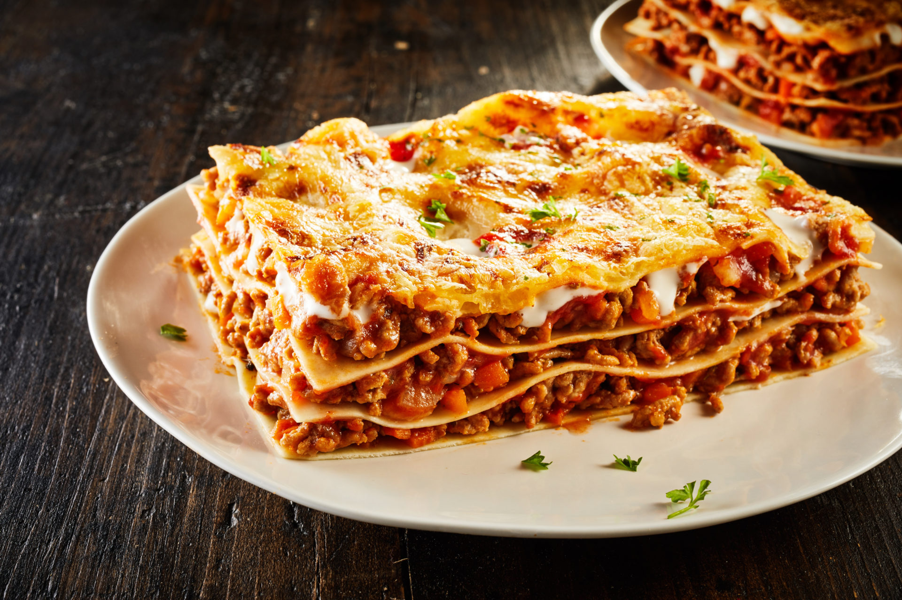

Lasagne

Les lasagnes sont à la fois des pâtes alimentaires en forme de feuilles rectangulaires,
et une recette de cuisine italienne à base de couches alternées de pâtes lasagnes, parmesan, mozzarella,
ou ricotta, et de sauce bolognaise ou sauce béchamel, gratinée au four
Ingredients
- boeuf hache
- pulpe de tomate
- ail
- parmesan rape
- Beurre
- Sucre
- Feuilles de lasagne
- Oignons
- Gruyere rape
- huile d'olive
- sel
- Sauce bechamel
Steps
- Faire cuire les feuilles de lasagnes dans de l'eau bouillante salée selon les instructions sur l'emballage.
- Préparer la sauce à la viande :
- Faire revenir la viande hachée dans une poêle avec de l'huile d'olive jusqu'à ce qu'elle soit dorée.
- Ajouter les oignons et l'ail hachés, faire revenir jusqu'à ce qu'ils soient tendres.
- Verser la sauce tomate, assaisonner avec du sel, du poivre, et des herbes italiennes. Laisser mijoter pendant 15-20 minutes.
- Préparer la sauce béchamel :
- Faire fondre le beurre dans une casserole à feu moyen.
- Ajouter la farine et mélanger jusqu'à ce que le mélange devienne doré.
- Progressivement, ajouter le lait en remuant constamment jusqu'à ce que la sauce épaississe.
- Assaisonner avec du sel, du poivre et de la noix de muscade selon votre goût.
- Assembler les lasagnes :
- Préchauffer le four à 180°C (350°F).
- Beurrer un plat à gratin et étaler une fine couche de sauce béchamel au fond.
- Disposer une couche de feuilles de lasagnes, puis étaler une couche de sauce à la viande et une couche de sauce béchamel.
- Répéter les couches jusqu'à ce que tous les ingrédients soient utilisés, en terminant par une couche de sauce béchamel.
- Cuire au four :
- Couvrir le plat de papier d'aluminium et cuire au four préchauffé pendant 30 minutes.
- Retirer le papier d'aluminium et poursuivre la cuisson pendant 15 minutes supplémentaires, jusqu'à ce que le dessus soit doré.
- Laisser reposer quelques minutes avant de servir.
- Servir chaud et déguster !